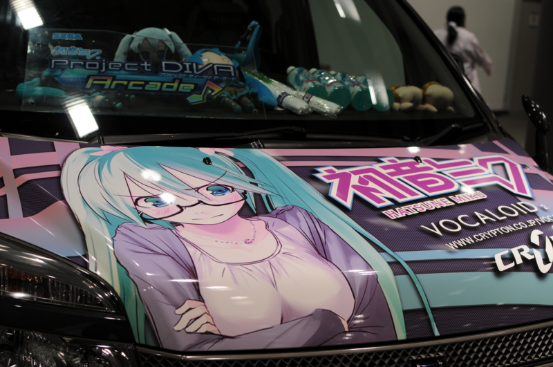
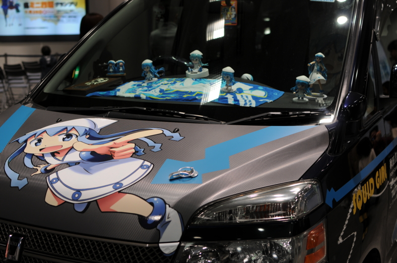
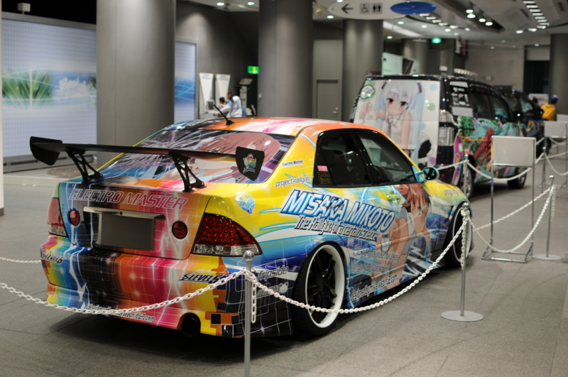

池袋で痛車をみた
公開日：
旅フェア日本2012 というものに行ってきた - だるろぐ の帰りに、痛車が置いてあるのを見かけたので寄ってきた。地理的な位置は聞くな。田舎者だから、なにがどこにあるのかさっぱりわからん。

これは何のアニメだかマンガだかわからん。

ボーカロイドの初音ミクさん。最近は世界的に人気だと聞く。自分は音楽音痴なので、使ったことはないけれど。しかし、いい趣味してるな。可愛いじゃないか。

これは『侵略!イカ娘』のイカちゃん！ イカちゃん可愛い。ファーストシーズンは Hulu で観ることができたはず。
ただ、サイドが「とある～」になっているのはどうよ。愛がブレていると思う。

最後はその「とある～」シリーズの一つ、『とある科学の超電磁砲＜レールガン＞』の御坂美琴さん。あまりラノベには詳しくないのだけれど*1、結構人気あるよねぇ。
もちろん、2F には真面目なクルマも展示してある。
お金があれば、プリウスかオーリスは買ってもいいかなぁ。個人的にはプジョーの 260CC あたりに乗ってみたいけれど、たぶん、買うとすればトヨタ車なんだろう。妹の旦那がトヨタの人だしな。“しがらみ経済”というヤツだ。別に、それ自体は嫌いでないのだけど。
しかし、まぁ、どうなんだろな。
「若者*2のクルマ離れ」なんて言うけれど、実際買ってみれば、クルマだっていいモノなのかもしれない。たとえば最近、友人がワンボックスに乗り換えたりしているのを見ていると、少し羨ましい気がする。そのクルマに対してはまったく羨望を感じないけれど、それが必要になって、買っているという状態に、少しね。自分もいつかそうなるのかねぇ。今のお給料ではそんな気になれないけれどｗ 親の面倒もみなきゃいけないし、個人的にやりたいこともある。
そういうわけもあって、移動手段は当分、バイクでいい。タイヤなんぞ四つも要らねぇ、二本あれば十分！次の更新でゴールド免許なので、安全第一で行きたいですね。